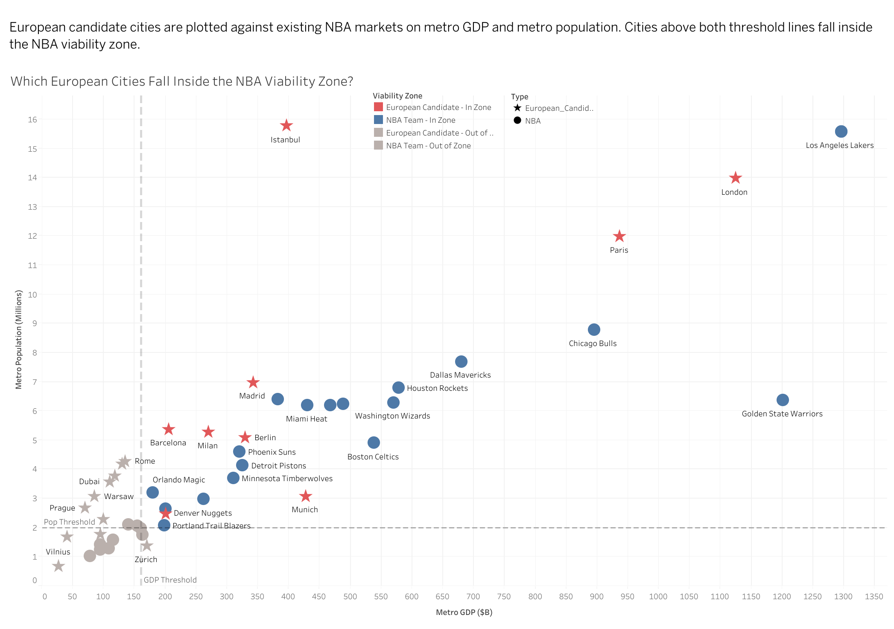
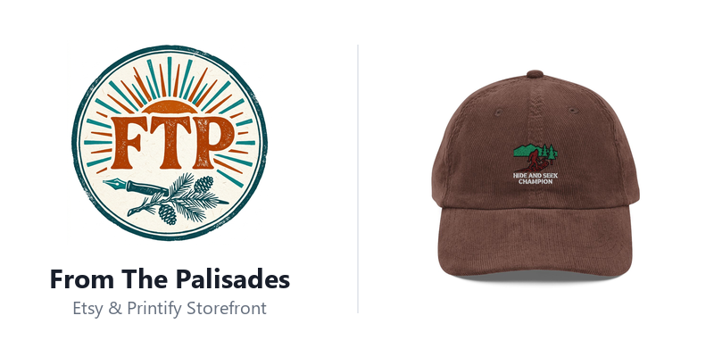

.jpg)
Luke Christensen
Strategic Management at the BYU Marriott School of Business. I bridge product strategy, customer discovery, and quantitative engineering—from scaling conversion on a 22B-record platform and orchestrating multi-agent AI systems to modeling DOJ antitrust merger concentration across 10,000+ flight routes.
Explore by Track
Select an area of focus to dive deeper into technical blueprints, enterprise experience, or products.
System Blueprints & Data Engines
Interactive architectures for DOJ antitrust route modeling, multi-agent AI swarms, econometric elasticity, and Census GIS pipelines.
Track Record & Experience
Proven results across FamilySearch (22B+ records), TrailRunner International, BYU Music Group, Zark SaaS, MOTYV8, and Councyl Capital.
Featured Work & Products
Bento gallery of product strategies, UX prototypes in Figma, market entry models, and mobile apps.
Technical Architecture & Data Engines
Detailed system blueprints, mathematical modeling, and engineering trade-offs behind my quantitative and automated work.
DOJ Antitrust Route Concentration Engine
US DOT DB1B Flight Data
Ingested 10,000+ Origin-Destination (O&D) route pairs from Bureau of Transportation Statistics, normalizing ticketing volumes and airline carriers.
SQL Window Partitioning
Computed carrier route market shares dynamically via OVER (PARTITION BY origin, dest) to evaluate Route Herfindahl-Hirschman Indices ($HHI$).
Litigation Risk Flags
Identified high-concentration routes where Post-Merger $HHI > 2500$ and $\Delta HHI \ge 200$, matching the exact DOJ antitrust presumption threshold for route monopoly scrutiny.
📐 Quantitative Economic Model
- Herfindahl-Hirschman Index: $HHI = \sum_{i=1}^N s_i^2$, where $s_i$ is carrier market share percentage on route $(origin, dest)$.
- Antitrust Presumption: Post-merger market concentration change: $\Delta HHI = 2 s_{JetBlue} s_{Spirit}$.
- Regulatory Scrutiny Threshold: Flagged routes with Post-HHI > 2,500 and $\Delta HHI \ge 200$ as highly anticompetitive.
🎯 Strategic PM & Executive Takeaway
- Demonstrated why nationwide airline market share figures are deceptive; antitrust scrutiny lives and dies on route-level city-pair market power.
- Provided senior leadership with exact divestiture recommendations (slot remedy airports) required to overcome DOJ regulatory challenges.
▶ Inspect Underlying SQL Query Pipeline (PostgreSQL) Click to expand
-- JetBlue / Spirit Merger Antitrust Model: DOJ HHI Concentration
WITH RoutePassengers AS (
SELECT
origin, dest, carrier,
SUM(passengers) AS carrier_passengers,
SUM(SUM(passengers)) OVER (PARTITION BY origin, dest) AS total_route_passengers
FROM us_dot_db1b_flights
GROUP BY origin, dest, carrier
),
CarrierMarketShare AS (
SELECT
origin, dest, carrier,
ROUND((carrier_passengers::numeric / total_route_passengers) * 100, 2) AS market_share_pct
FROM RoutePassengers
),
PrePostMergerHHI AS (
SELECT
origin, dest,
ROUND(SUM(POWER(market_share_pct, 2)), 0) AS pre_hhi,
ROUND(SUM(POWER(
CASE WHEN carrier IN ('B6', 'NK') THEN
SUM(CASE WHEN carrier IN ('B6', 'NK') THEN market_share_pct ELSE 0 END) OVER (PARTITION BY origin, dest)
ELSE market_share_pct END, 2)), 0) AS post_hhi
FROM CarrierMarketShare
GROUP BY origin, dest
)
SELECT origin, dest, pre_hhi, post_hhi, (post_hhi - pre_hhi) AS delta_hhi,
CASE WHEN post_hhi > 2500 AND (post_hhi - pre_hhi) >= 200 THEN 'DOJ PRESUMPTION OF ANTICOMPETITIVE HARM'
ELSE 'UNLIKELY ADVERSE IMPACT' END AS regulatory_assessment
FROM PrePostMergerHHI
ORDER BY delta_hhi DESC;7-Agent Autonomous E-Commerce Swarm
Market Research Agent
Ingests trending search velocity across Pinterest and Google Trends APIs, ranking unserved product niches by search-volume-to-competition ratio.
Catalog & Copy Agents
Generates high-converting SEO copy and creates live production variants across print providers via asynchronous Printify REST APIs.
Distribution Agent
Schedules algorithmic pin deployment across buyer boards. Scaled the storefront from 0 to ~30,000 monthly impressions in 10 weeks with day-one profitability.
⚙️ Multi-Agent Orchestration Logic
- Role Specialization: Decomposed operations into 7 micro-agents (Trend Hunter, SEO Copywriter, Mockup Generator, Catalog Creator, Pricing Optimizer, Pin Scheduler, and Telemetry Auditor).
- Async Pipeline: Parallelized catalog deployment using Python
asyncio.gather, cutting SKU launch cycle from 45 minutes to under 30 seconds. - Zero Human Overhead: Validated strict JSON schemas to eliminate AI hallucination before publishing live storefront listings.
📈 Quantified Business Lift
- Grew organic impressions from 0 to ~30,000 monthly views within 2.5 months.
- Achieved profitable first sales on day of launch with zero paid advertising spend.
- Demonstrated how agentic workflows transform solo operators into high-volume product companies.
▶ Inspect Agent Swarm Orchestrator Implementation Click to expand
import asyncio
from dataclasses import dataclass
class AutonomousCommerceOrchestrator:
"""7-Agent Swarm: Trend Discovery -> Copywriting -> Catalog Sync -> Social Distribution"""
def __init__(self, claude_client, printify_client, pinterest_api):
self.claude = claude_client
self.printify = printify_client
self.pinterest = pinterest_api
async def execute_daily_pipeline(self):
# 1. Trend Hunter Agent: Ingests rising query momentum
trending = await self.agent_trend_hunter.extract_high_intent_niches()
# 2. Copywriter & SEO Agent: Generates optimized title, tags, description
optimized_listings = await asyncio.gather(*[
self.agent_seo_copywriter.generate_product_metadata(niche)
for niche in trending[:5]
])
# 3. Catalog & Production Agent: Creates Printify blueprint variants
active_products = await asyncio.gather(*[
self.agent_printify.publish_product(listing)
for listing in optimized_listings
])
# 4. Social Distribution Agent: Deploys pins targeting top boards
# Metric Outcome: 0 to ~30k monthly Pinterest impressions in 2.5 months
await self.agent_pinterest_distributor.schedule_pins(active_products)
return {"status": "deployed", "products": len(active_products)}Airbnb Econometric Demand & Elasticity Engine
133MB Cleaned Listings
Processed multi-city listing datasets, filtering extreme outliers, normalizing cleaning fees, and imputing 30-day booking demand velocity.
Fixed Effects Regression
Specified log-log multivariate model with neighborhood clustered standard errors to isolate pure price elasticity from location confounders.
Dynamic Pricing Curves
Quantified Own-Price Elasticity ($OPE = -1.05$ in Los Angeles), establishing revenue-maximizing price floors and seasonal ceiling limits.
📊 Econometric Model Specification
- Log-Log Equation: $\ln(Bookings) = \beta_0 + \beta_1 \ln(Price) + \sum \gamma_k X_k + \alpha_{neighborhood} + \epsilon$.
- Elasticity Coefficient: $\beta_1 = -1.048$ ($p < 0.001$), indicating slightly price-elastic consumer demand in primary metro markets.
- Control Covariates: Accommodates, bedrooms, review scores rating, instant bookable, and superhost status.
💡 Platform Strategy Implications
- Identified that hosts uniformly underprice listings during low-season and overprice during high-season, missing optimal platform booking fees.
- Designed host dynamic pricing recommendation algorithm that maximizes Gross Booking Value (GBV) without sacrificing occupancy.
▶ Inspect Econometric R Modeling Code Click to expand
# Airbnb Demand & Price Elasticity Econometric Model
library(tidyverse)
library(fixest) # Fast clustered standard errors & fixed effects
airbnb_clean <- read_csv("data/airbnb_multicity.csv") %>%
filter(price > 15 & price < 2500, estimated_bookings_30d > 0) %>%
mutate(log_bookings = log(estimated_bookings_30d), log_price = log(price))
# Multivariate Regression with Neighborhood Fixed Effects
elasticity_model <- feols(
log_bookings ~ log_price + accommodates + bedrooms + review_scores_rating +
instant_bookable | metro_market^neighbourhood_cleansed,
data = airbnb_clean,
vcov = "cluster" ~ neighbourhood_cleansed
)
summary(elasticity_model)
# Estimated beta_1 (OPE) = -1.048 (SE: 0.031, p < 0.001)Sprouts Geospatial & Census TAM Pipeline
Competitor Location Harvesting
Automated scrapers for Whole Foods, Trader Joe's, and Sprouts locations, extracting precise latitude/longitude coordinates across target metro zones.
Demographic Join Engine
Queried US Census Bureau 5-Year ACS API for median household income, bachelor's degree attainment, and population density at the Zip Code Tabulation level.
3-Mile Radius Scoring
Executed geodesic buffer spatial joins to score unserved expansion zip codes, exporting clean analytical tables to executive Tableau workbooks.
🗺️ Spatial Scoring Algorithm
- Trade Area Buffer: 3.0-mile geodesic radius calculated around each prospective zip centroid.
- Cannibalization Penalty: Counted direct organic retail competitor density within the primary trade area.
- TAM Opportunity Index: $\text{Score} = \left(\frac{\text{Median Income}}{10,000}\right) \times \left(\frac{1}{\text{Competitors} + 1}\right)$.
🏢 Executive Real Estate Value
- Enabled real estate site selection committees to objectively rank top-tier expansion locations based on demographic spend capability.
- Eliminated gut-feel store openings with reproducible spatial data pipelines.
▶ Inspect Census & Spatial Pipeline Script Click to expand
import requests, pandas as pd
from geopy.distance import geodesic
# Ingest US Census Bureau 5-Year ACS Profiles
CENSUS_API_URL = "https://api.census.gov/data/2022/acs/acs5"
ACS_VARIABLES = {"B19013_001E": "median_household_income", "B01003_001E": "total_pop"}
def score_candidate_locations(candidates: pd.DataFrame, competitors: pd.DataFrame, census_df: pd.DataFrame):
scored = []
for _, cand in candidates.iterrows():
coord = (cand["lat"], cand["lon"])
comp_count = sum(geodesic(coord, (c["lat"], c["lon"])).miles <= 3.0 for _, c in competitors.iterrows())
zip_data = census_df.loc[census_df["zip"] == cand["zip_code"]]
income = zip_data["median_household_income"].values[0] if not zip_data.empty else 0
score = (income / 10000) * (1.0 / (comp_count + 1))
scored.append({**cand, "comp_3mi": comp_count, "opportunity_score": round(score, 2)})
return pd.DataFrame(scored).sort_values(by="opportunity_score", ascending=False)Track Record & Experience
Quantified product impact across scale platforms, corporate communications, SaaS startups, and private equity.
Analyst Intern
TrailRunner International (New York, NY)
Global strategy and communications firm serving leading corporate, financial, entertainment, and sports organizations
- Delivered 50+ briefs, media lists, and results reports since Sep, including daily briefs for a Fortune 500 financial client; synthesized market research for finance, music, entertainment, and NFL clients
Product Manager Intern
FamilySearch (Lehi, UT)
The world's largest genealogy organization, with 22B+ historical records and 297M annual site visits across 100+ countries
- Increased family name-adds among confirmation-email clickers from 21% to 35% (67% increase) by routing new-user emails straight into the guided tree builder instead of the main site page
- Discovered via Adobe Analytics that 59% of 820K monthly visitors added zero ancestors; authored PRDs to eliminate drop-off and incentivize tree setup
- Ran an A/B test on the guided tree builder experience, simplifying the interface to increase names added by 7%
Product and Strategy Manager
BYU Music Group (Provo, UT)
BYU's record label and media studio for internationally recognized globally touring artists
- Grew total song streams 25% using Spotify for Artists data and pitching strategies, increasing playlist submissions 70%
- Built a centralized asset database and project tracker, cutting search time by 50% and boosting release throughput by 20% across 80+ launches
- Led BYUMG's AI strategy by analyzing AI-generated music's risk to royalty revenue and presenting recommendations to the executive director, which were used in discussions with label partners
Product Manager Intern
Zark Parking Solutions (Provo, UT)
SaaS platform for multifamily parking management
- Built an AI-assisted PRD and user-story template in Claude, cutting draft time by 40%
- Built a 15+ item UX roadmap for the CPO by synthesizing 150+ customer reviews and 4 SaaS competitors
Product Manager Intern
MOTYV8 (Provo, UT)
Habit-building app for student athletes
- Launched a journal feature adopted across 6 programs (160+ athletes) by running discovery with coaches and athletes, where simplicity and accountability came up as top themes
- Cut clicks to core content 60% and lifted task completion 10% by redesigning user flows in Figma
Business Analyst Intern
Councyl Capital (Provo, UT)
Private equity firm investing across stages and asset classes, providing differentiated deal flow and active strategic support
- Built real-time performance dashboards for a Wells Fargo client by designing a new KPI framework for a trucking investment, co-presented with a cross-functional team to senior executives
Rapid Developer Certified
Enterprise low-code software architecture, domain entity modeling, XPath query constraints, microflows, and agile sprint delivery for scalable business applications.
Product Management Certified
Rigorous product management training led by top-tier tech PMs. Focused on customer discovery interviews, PRD authoring, user telemetry instrumentation, North Star KPI frameworks, and go-to-market strategy.
Strategic Management Honors
Selective admission into BYU Marriott's Strategic Management program. Advanced honors coursework in Competitive Strategy (STRAT 411/412), Econometrics (STRAT 402), and Business Information Systems (IS 201).
Featured Work
Selected product strategies, data modeling, and software products.

DOJ Antitrust & Route Concentration Engine
Evaluated DOJ antitrust merger scrutiny across 10,000+ domestic flight routes for the proposed JetBlue/Spirit merger. Computed carrier market shares and Delta HHI index changes using SQL partition window functions to isolate monopoly pricing risks.

Fleet Logistics KPI Framework
Engineered real-time operating dashboards and an actionable KPI performance framework for a Wells Fargo client investing in commercial trucking.

7-Agent Autonomous Commerce Swarm
Architected and deployed an autonomous micro-agent pipeline combining keyword discovery, copy generation, on-demand catalog creation (Printify API), and automated social distribution. Grew Pinterest account from 0 to ~30K monthly impressions in 2.5 months.
Sprouts Census & Location Pipeline
Web scraping pipeline integrated with US Census Bureau demographic data (ACS 5-Year) and spatial radius analysis to pinpoint high-yield expansion zip codes for organic retail.
Airbnb Demand & Elasticity
Multivariate econometric regressions across 133MB of Airbnb market data. Quantified Own-Price Elasticity of Demand and modeled revenue-maximizing pricing curves.

AI Implementation Strategy
Company-wide framework for integrating generative AI into product workflows at Zark Parking Solutions, cutting PRD writing time by 40%.
NBA International Expansion
Data-grounded strategy evaluating European metropolitan market entry, flight readiness, arena economics, and localized fan engagement tiers.
Samsung Product Strategy
Strategic analysis of product life cycles, hardware margins, and competitive positioning against ecosystem competitors.

The Cougar Planner
End-to-end product design from user discovery interviews to interactive high-fidelity Figma prototypes and Mendix domain data model specifications.

DayLoom
A curated daily journaling mobile app built with React Native, designed around mindful reflection, smooth haptic micro-interactions, and local-first data storage.